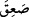

olacak. Kıyamet günü ilk şefâat edecekler, peygamberler, âlimler ve şehidlerdir.
Bu ümmetten cennete ilk girecek olan Ebû Bekir (r.a.)’tır. Hakk’ın selâmlayıp
musâfaha edeceği ilk zat Ömer (r.a.)’tır. Zenginlerden cennete ilk girecek olan ise
cennetle müjdelenen on kişiden biri olan Abdurrahman b. Avf olacak. Cennete ilk
çağrılacak olanlar genişlikte ve darlıkta çok hamdedenlerdir. Cennete ilk girecek
olan doğru sözlü tâcirdir. Allah’a ilk bakacak olan doğuştan âmâ olandır.”[146]
el-Medârik’te şöyle der: “Bu âyet iki adet üfürme/nefha olduğuna delâlet etmektedir.
İlk nefha ölüm, ikinci nefha ise yeniden diriliş içindir. Cumhura göre üç nefha vardır:
Birincisi, dehşet/korku içindir. Nitekim Allah Teâlâ şöyle buyuruyor: “Sûr’a
üfürüldüğü gün, -Allah’ın diledikleri müstesnâ- göklerde ve yerde bulunanlar hep
dehşete (feza’) kapılır.” (en-Neml 27/87). İkincisi, ölüm nefhası, üçüncüsü de yeniden
diriltme nefhasıdır.”
Nefha iki adet olursa, âyetteki “__WORD__nın mânâsı, ‘birer ölü olarak düşüverirler’ olur.
Üç adet olursa, ‘baygın bir vaziyette düşüverirler’ olur. O zaman bu üçüncü nefha,
bazılarının söylediği gibi kıyamet günkü diriltme nefhasından sonra olur.
Müftî Sa’dî der ki: “Hadislerden ilk bakışta anlaşılan mânâ, nefhaların dört olduğuna
delâlet etmektedir. Yâsîn sûresinde geçen iki nefha: öldürme sonra diriltme nefhası.
Korku ve dehşet salmak için bir nefha daha vardır. Bu esnâda bütün varlıklar bayılır.
Sonra uyandırıp ayıltmak için de bir nefha vardır.”
Harîdetü’l-acâib’den anlaşılan da odur ki, dehşet (feza’) nefhası nefhaların ilkidir.
Kıyametin şartları tahakkuk edip Allah, Sûr’un sâhibine (İsrâfil) dehşet nefhası için
emrini verip de Sûr’a uzun, devamlı, bir yıl boyunca ses her gün daha da şiddetlenecek
şekilde üfürülünce, herkes dehşete kapılıp üşüşecek. Çobanlar sürülerini bırakacak,
vahşî ve yırtıcı hayvanlar, çığlığın dehşetinden büyük bir korkuya kapılmış olarak gelip
insanların arasına karışacak. İş o raddeye varacak ki yer ve gök eski özellik ve
durumlarını kaybederek başkalaşacak. Bu dehşet nefhası ile ikinci nefha arasında kırk
yıl vardır. Sonra ikinci ve üçüncü nefhalar vâki olacak. Bunların arasında da kırk yıl,
kırk ay, kırk gün veya kırk saat olacak.
İmam Gazzâlî (r.h.) der ki: İki nefha arasındaki zamanın miktarı hakkında insanlar
ihtilâf etmiştir. Ancak cumhur, bunun kırk yıl olduğunda karar kılmıştır. İlminden hiç
şüphe duymadığım bir zat bana bildirdi ki, bu sürenin miktarını Allah’tan başkası
bilmez. Çünkü bu rubûbiyetin sırlarındandır.
Allah yarattıklarını diriltmek istediğinde, Arş hazinelerinden içinde hayat denizinin
bulunduğu hazineyi açar ve oradan yeryüzüne yağmur yağdırır. Yeryüzü susuzluktan
yanıp kavrulduktan sonra bu yağmur ile dirilip kıpırdar. Yağmur yeryüzünün tamamını
kaplar ve yerin üstünde kırk arşın yükseklikte su olur. Bir de bakılacak ki cisimler
kuyruk sokumundan (acbü’z-zeneb) bitip hâsıl olur. Acbü’z-zeneb, insandan ilk
yaratılacak şeydir. Yaratma ondan başlamış, yeniden yaratma ondan olacaktır. Nohut
büyüklüğünde iliksiz bir kemiktir.
Cisimler bakla gibi bitip hâsıl olduğu zaman birbirine girer. Bu sırada bir de görülür